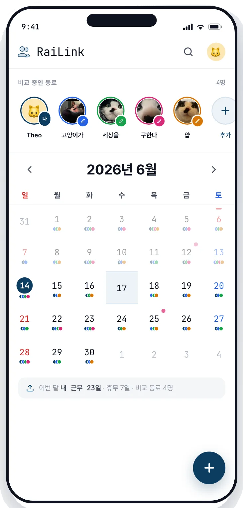

Case 02
직접 만든 것
1인 빌드·운영Built solo
built & run 0→1
RaiLink
근무표가 제각각인 사람끼리,
같이 쉬는 날을 어떻게 찾지?When everyone works different shifts,
how do you ever find a day off together?
Role
기획 · UX · 디자인 · 프론트엔드 · 그로스
2026 → · 기여도 100%Strategy · UX · Design · Front-end · Growth
2026 → · 100% mine
문제Problem
교대 근무자는 근무표가 매달 새로 짜여서, 친구와 쉬는 날을 맞추기가 쉽지 않습니다. 저도 항공 승무원 시절 그랬고, KTX 승무원 지인도 마찬가지였어요. 항공이든 철도든, 교대로 일하는 사람이라면 누구나 겪는 일이죠. 다들 '일정이 안 맞아서'라고 생각하지만, 겹치는 날은 분명히 있었어요. 문제는 그걸 알려면 서로 근무표를 캡처해 한 장씩 눈으로 맞춰봐야 한다는 것, 그 품이 너무 컸다는 거였죠. 그래서 직접 만들기 시작했습니다.Shift work rewrites the calendar every month, so it's never easy for friends to line up a day off. I lived that as airline cabin crew, and a KTX-crew friend was in the same boat. Everyone assumes the schedules just don't line up, but the overlapping days were always there. The catch was that seeing them meant screenshotting each other's rosters and comparing line by line, and that effort was the real cost. So I started building it myself.
만든 것What I built
질문을 바꿨습니다. '누가 언제 일하나'가 아니라 '우리가 언제 같이 비나'를 보여주면 된다고요. 사람마다 색을 정해 모두의 근무·휴무를 한 캘린더에 겹쳐 두면, 비는 날은 굳이 찾지 않아도 저절로 드러납니다.I reframed the question, from “who works when” to “when are we all free.” Give each person a color, stack everyone's shifts and days off on one calendar, and the free days surface on their own.
서로 동의한 사람끼리만 일정이 보이게 하고, 처음 온 사람도 빈 화면을 안 만나도록 데모 계정을 채워 뒀어요. 기획부터 UX·디자인·프론트엔드까지 혼자, 설치 없이 쓰도록 PWA로 배포했고, 2026년 지인 한 명으로 실사용을 시작했습니다.Schedules show only between people who both opt in, and a pre-filled demo account means first-timers never hit a blank screen. I built all of it solo (planning, UX, design, front-end) and shipped it as a PWA, nothing to install. It went live in 2026 with a single user: that friend.

PWA
설치 없이 · 1인 운영No install · run solo
진단Diagnosis
들어온 열에 아홉이
가입 없이 떠났다Nine in ten left
without signing up
첫 달 GA에는 '활성 사용자 489명'이 찍혔지만, 그중 100명 가까이는 해외에서 들어온 봇이었어요. 걷어내니 국내 실방문은 약 400명. 그런데 이 대부분도 '사용자'가 아니라 구경만 하고 떠난 방문자였고, 실제 가입은 44명이었습니다. 들어온 열에 아홉이 가입 없이 떠난 셈이라, 여기가 가장 크게 새는 구간이었습니다. 가입 이후의 행동은 GA가 아니라 서비스 DB에 있어서, SQL로 깔때기를 직접 짚고 본인 운영 계정은 다 뺐습니다.The first month, GA showed “489 active users”, close to a hundred of them overseas bots. Strip those out and you get roughly 400 real local visits. But most of those weren't users either, just visitors who looked around and left: actual sign-ups were 44. Nine in ten left without signing up, the biggest leak on the page. What happens after sign-up lives in the database, not GA, so I queried the funnel in SQL and dropped my own operator accounts.
'활성 사용자'는 일부러 더 깐깐하게 셌어요. 처음엔 공유를 수락한 32명으로 잡았는데, 수락해도 한쪽이 근무표를 안 올리면 겹쳐볼 게 없잖아요. 그래서 '연결까지 됐고 양쪽 다 근무표가 있는 23명'으로 좁혔습니다. 보기 좋은 숫자 대신, 실제로 가치를 본 사람만 세고 싶었으니까요.I counted “active” more strictly than was flattering: at first the 32 who accepted a share, but an accepted share with no roster uploaded has nothing to overlap, so I narrowed it to the 23 who were connected and both had rosters in. I wanted the people who actually got value, not a nicer number.
열에 아홉이 가입 문턱에서 이탈, 가장 큰 누수. 가입 뒤로는 비교적 버팁니다(44 → 29 → 23).9 in 10 leave before sign-up, the biggest leak. After sign-up it holds (44 → 29 → 23).
발견Finding
깔때기 아래 DB를 더 파 보니 네 가지가 보였습니다.Digging deeper into the database below the funnel, four things stood out.
광고 없이 1명이 19명이 되고, 75명까지 컸어요. 시드 그룹의 84%가 실제로 썼고, 한 사람이 평균 3.5명과 연결됐습니다.From 1 to 19 to 75 users, without ads. 84% of the seed group actually used it, each connecting with about 3.5 others.
4명 중 1명이 알아서 초대를 보냈고(인당 평균 0.45건), 보낸 초대 34건 중 21건이 가입으로 이어졌어요.1 in 4 sent an invite on their own (0.45 invites per user), and 21 of the 34 invites sent led to sign-ups.
초대 링크로 들어온 가입 29명을 전체 사용자 75명으로 나눈 값이에요. 사용자 한 명이 새로 데려오는 사람은 평균 0.4명. 1.0을 넘어야 광고 없이 스스로 큽니다.29 sign-ups came through invite links, divided by 75 users: one user brings in 0.4 new users on average. It needs to clear 1.0 to grow on its own.
근무표가 매달 새로 나와서, 다음 달이 돼야 재는 값이에요. 다음 달을 맞아 본 가입자 73명 중 14명이 새 근무표를 올리러 돌아왔습니다.Rosters come out monthly, so this only shows a month later. Of the 73 who have seen a next month, 14 returned to upload the new roster.
10명이 4명을 데려오는 수준이에요. 광고 없이 스스로 크려면 0.6 남았습니다.Ten users bring four. 0.6 to go before it grows without ads.
전략Strategy
유입을 더 사는 대신,
마개부터 잠근다Plug the drain
before buying inflow
여기서 토스가 쓰는 Carrying Capacity(한계 수용량)를 가져왔어요. 서비스를 욕조로 보면, 사용자가 머무는 수위는 물을 얼마나 붓느냐(유입)가 아니라 마개가 얼마나 열려 있느냐(이탈)로 정해집니다. 실제로 직장인 익명 커뮤니티 '블라인드'에 글이 한 번 올라가자 사흘 새 193명이 몰렸다가, 금세 평소 수위로 돌아왔어요. 마개가 열린 채로는 아무리 부어도 그대로 빠진다는 뜻이죠.I borrowed Carrying Capacity, the idea Toss uses. Picture the service as a bathtub: the level it holds is set not by how much you pour in (acquisition) but by how open the drain is (churn). One post on Blind, an anonymous workplace community, sent 193 visitors in over three days, and they drained back to baseline just as fast. Proof that with the drain open, pouring more changes nothing.
그래서 유입을 더 사는 대신 마개부터 잠그기로 했습니다. 홍보는 주 1시간으로 묶고, 이미 들어오는 트래픽을 깔때기 위에서부터 셋만 봅니다. 이 순서엔 이유가 있어요. 첫 겹쳐보기를 해본 사람만 가치를 실제로 느끼고, 그 사람만 동료를 초대하고 다음 달에 돌아오거든요.So instead of buying inflow, I plugged the drain first: capped promotion at an hour a week, and I watch just three steps of the funnel, top down. The order is deliberate: only someone who's seen a first overlap feels the value, and only they invite others and come back.
블라인드 글 하나로 사흘 새 193명이 몰렸지만, 며칠 만에 평소 수위로 돌아왔어요. 부어도 새는 만큼 빠진다는 증거예요.One Blind post drove a 3-day spike of 193. It fell back to baseline within days. What pours in drains right out.
그래서 북극성 지표도 가입자 수가 아니라 '월간 활성 비교 쌍'으로 잡았습니다. 서로 연결돼 있고 그 달 근무표를 양쪽 다 올려서, 새 근무표를 겹쳐볼 수 있게 된 쌍의 수예요. 가입자 수는 누적이라 서비스가 죽어가도 줄지 않지만, 이 숫자는 달마다 0에서 다시 세니까 사람들이 쓰지 않으면 같이 떨어지거든요. 근무표가 매달 새로 나오니, 이 쌍이 다시 만들어졌는지가 '이번 달에도 쓸모 있었는지'를 그대로 말해 주고요. 운영 중에는 초대나 첫 겹쳐보기 같은 행동을 주간으로 지켜보되, 생사 판정은 이 월간 숫자로 합니다.So the North Star isn't sign-ups but monthly active pairs: pairs who are connected and have both uploaded that month's roster, so the new rosters can be overlapped. Sign-ups are cumulative and never fall even as a service dies; this number resets to zero each month, so when people stop using it, it falls with them. A new roster comes out every month, so whether the pair forms again says exactly whether the service was useful this month. Day to day I still watch weekly behaviors like invites and first overlaps, but the live-or-die verdict is this monthly number.
실험: 초대 루프부터Experiment
실패한 실험이
진짜 병목을 알려줬다The failed experiment
pointed to the real bottleneck
첫 실험은 원래 '랜딩을 고쳐 가입 전환을 올리기'였는데, 뒤집었습니다. 혼자 들어온 사람은 비교할 상대가 없어 가치를 못 보고, 초대받아 온 사람은 도착하자마자 초대한 사람과 자동으로 연결돼 바로 가치를 봐요. 그러니 이 서비스가 스스로 굴러갈지는 결국 '사용자가 동료를 초대하느냐'에 달려 있고, 그게 가장 안 풀린 고리였습니다.My first experiment was going to be "fix the landing page to lift sign-up." Then I flipped it. Arrive alone and you have no one to compare with, no value; arrive by invite and you're auto-connected to your inviter, value on arrival. So whether this grows on its own comes down to one thing (do users invite their colleagues), and that was the weakest link.
그럼 사람들은 왜 초대를 안 보낼까요? 링크 하나만 보내면 받은 사람이 가입과 동시에 자동으로 연결되는데도, 보내는 사람은 4명 중 1명뿐이었어요. 가설은 둘이었어요. ① 가치를 못 느꼈다. ② 보낼 계기가 없었다. 그래서 초대 권유를 가치가 막 발생한 순간에 제품 안에 심습니다. 첫 겹쳐보기를 마친 직후, 그리고 새 근무표를 올린 직후에 '같이 볼 동료 한 명을 초대해 보라'고 권하는 거예요.So why don't people send invites? One link is all it takes (whoever opens it is auto-connected the moment they sign up), yet only 1 in 4 users ever sent one. Two hypotheses: ① they didn't feel the value, ② nothing prompted them. So the prompt goes into the product, right where value just happened: straight after a first overlap, and straight after a new roster upload, a nudge to invite one colleague to compare with.
판정 기준은 미리 적어뒀습니다. 한 달 뒤 초대 발송이 권유가 없던 지난달의 2배를 넘으면 ②가 답입니다. 계기만 주면 보낸다는 뜻이니 권유 장치를 늘립니다. 그대로면 ①이 답입니다. 계기를 줘도 안 보내는 것이니, 초대를 권하기 전에 첫 겹쳐보기까지 가게 만드는 일부터 다시 합니다. 표본 75명에서 작은 차이는 노이즈와 구분되지 않아서, 큰 변화만 인정합니다.The pass-fail rule was written in advance. If invite sends more than double the prompt-free previous month, ② is the answer: people just lacked a nudge, so more prompts go in. If nothing moves, ① is the answer: a nudge isn't enough, so the work moves earlier, getting new sign-ups to their first overlap before asking them to invite. With 75 users, small differences are indistinguishable from noise, so only a big change counts.
한 달 뒤 결과를 열었습니다. 권유가 있던 30일의 초대 발송은 13건. 권유가 없던 직전 30일은 21건이었으니 2배는커녕 늘지도 않았고, 미리 적어둔 기준대로 실패로 기록했습니다. 그런데 뜯어보니 답이 두 가설 어느 쪽도 아니었어요. 그 한 달간 권유를 한 번이라도 본 사람은 36명뿐이었고, 그중 8명이 실제로 초대를 만들었습니다. 본 사람 다섯 중 하나가 움직였으니 권유가 무시당한 건 아니에요. 진짜 답은 ①도 ②도 아닌 ③, 권유가 뜨는 순간까지 가는 사람 자체가 적다는 것이었습니다. 가치를 못 느낀 게 아니라, 가치가 생기는 순간에 도달하지 못하고 있었던 거예요.A month later I opened the results. Thirty days with the prompt: 13 invites sent. The thirty days before it: 21. Not even flat, let alone double, so by the rule written in advance it goes down as a failure. But the numbers fit neither hypothesis. Only 36 people saw the prompt at all that month, and 8 of them actually created an invite. One in five acted, so the prompt wasn't being ignored. The real answer was neither ① nor ② but a third: too few people ever reach the moment where the prompt appears. They weren't failing to feel the value; they weren't reaching the moment where the value happens.
본 사람 중 초대 생성 · 22% (36명 중 8명). 권유가 무시된 게 아니라, 권유가 뜨는 순간까지 도달한 사람이 36명뿐이었다.Of those who saw it, 22% created an invite (8 of 36). The prompt wasn’t ignored; only 36 people ever reached it.
③이 답이라면 다음 질문은 '사람들은 언제 그 순간에 도달하나'입니다. 권유가 뜨는 계기가 업로드였으니, 업로드가 언제 일어나는지를 뜯어봤어요. 여기서 둘을 배웠습니다. 하나, 매달 새 근무표가 나오는 시기에 업로드가 몰릴 줄 알았는데, 그런 '발표 주간'은 없었습니다. 같은 소속끼리도 올리는 날이 8일까지 벌어졌고, 가장 큰 계기는 발표가 아니라 가입 직후였어요. 둘, 진짜 병목의 위치입니다. 그 한 달 동안 새로 가입한 22명 전원을 따라가 봤어요. 12명은 근무표를 올리기도 전에 떠나 권유를 볼 기회조차 없었고, 근무표를 올리고 동료와 연결돼 첫 겹쳐보기까지 간 사람은 8명뿐이었습니다. 22명 중 14명(64%)이 가치가 생기는 순간에 닿기 전에 떠난 거예요. 두 배움이 같은 곳을 가리킵니다. 그래서 다음 실험은 초대 장치가 아니라 가입 직후의 첫 동선을 겨냥합니다.If ③ is the answer, the next question is when people actually reach that moment. The prompt fired on uploads, so I dug into when uploads happen, and learned two things. First, I'd assumed uploads would cluster in the week each month when new rosters come out. That “roster week” doesn't exist: even people in the same unit uploaded up to eight days apart, and the biggest trigger wasn't the release but the moment right after signing up. Second, where the real bottleneck sits. I followed all 22 people who signed up during that month. Twelve left before even uploading a roster, so they never had a chance to see the prompt; only 8 made it through uploading, connecting with a colleague, and a first overlap. 14 of the 22 (64%) left before reaching the moment where the value happens. Both lessons point to the same place, so the next experiment targets not the invite mechanics but the first steps right after sign-up.
지금Now
'아는 사람끼리 쓰는 도구'로는 됐고,
'혼자서도 굴러가는 서비스'로는 아직As a tool friends use together, proven;
as a service that runs on its own, not yet
지금까지(2026년 7월 기준) 확인된 건, 서로 아는 좁은 무리만 형성되면 거의 다 가치를 본다는 거예요. 시드 그룹에선 84%가 실제로 일정을 겹쳐 봤고, 한 번 써본 사람은 평균 3.5명과 연결됐으며, 보낸 초대의 62%가 가입으로 이어졌습니다.What's clear so far (as of July 2026): once a close-knit group forms, almost everyone gets value. 84% of the seed group actually overlapped schedules, each connected with about 3.5 others, and 62% of invites converted.
아직 안 되는 건 둘이에요. ① 스스로 크는 것. 누적으로는 열 명이 네 명을 데려왔지만(계수 0.4), 최근 30일 초대 발송은 0건입니다. 시드 시절의 활발함이 평균을 끌어올렸을 뿐, 지금 초대 루프는 멈춰 있어요. ② 지인 네트워크 밖에서 살아남는 것. 블라인드에 글이 한 번 올라가 사흘 새 방문이 몰렸을 때, 혼자 들어온 사람들은 곁에 비교할 동료가 없어 대부분 금방 떠났거든요.Two things don't work yet. ① Growing on its own. Cumulatively ten users have brought four (a 0.4 coefficient), but the last 30 days saw zero invites sent. The seed era propped up that average; right now the invite loop is stalled. ② Surviving beyond the circle of acquaintances. When one Blind post flooded the site for three days, people who arrived alone had no colleague to compare with and mostly left.
생사 판정 지표로 잡은 월간 활성 비교 쌍도 그대로 재고 있습니다. 실측하면 5월 9쌍, 6월 55쌍, 7월 28쌍이에요. 6월 봉우리는 시드 그룹과 블라인드 유입이 만든 것이었고, 유입이 멎자 절반으로 내려왔습니다. 스스로 세운 지표가 하락을 가리키는 셈인데, 덕분에 지금 손볼 곳이 유입이 아니라 유지라는 판단도 이 숫자가 대신 정해 줍니다.The live-or-die metric gets measured the same way: monthly active pairs went 9 in May, 55 in June, 28 in July. The June peak was seed-group and Blind inflow; once the inflow stopped, it fell by half. My own metric points down, and that same number settles where to work next: retention, not acquisition.
재방문도 코호트로 갈라 봅니다. 동료와 무리로 들어온 5월 가입자는 20명 중 8명(40%)이 다음 근무표를 올리러 돌아왔지만, 블라인드로 대부분 혼자 들어온 6월 가입자는 53명 중 6명(11%)에 그쳤어요. 숫자는 하락인데 내용은 진단 그대로입니다. 동료와 같이 온 사람은 남고, 혼자 온 사람은 떠납니다. 전체 기준선은 73명 중 14명(19%)이고, 앞으로의 개선은 이 선에서 잽니다.Retention gets split by cohort too. May's sign-ups arrived in groups of colleagues, and 8 of 20 (40%) came back to upload the next roster; June's mostly arrived alone from Blind, and managed 6 of 53 (11%). The number falls, but it says exactly what the diagnosis said: people who come with colleagues stay, people who come alone leave. The overall baseline is 14 of 73 (19%), and improvements get measured against that line.